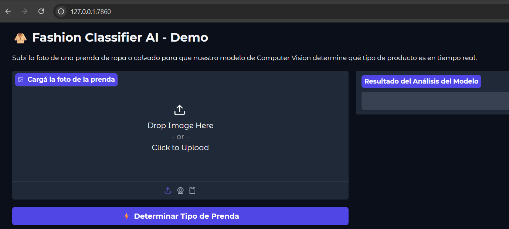

Clasificación Inteligente de Indumentaria: Diseñando una API de Inferencia E-Commerce
Uno de los desafíos más interesantes al trabajar en sistemas de recomendación y plataformas de comercio electrónico es el procesamiento automático de catálogos. En este proyecto, desarrollé un sistema punta a punta capaz de recibir imágenes de productos textiles o calzado y clasificar la categoría de la prenda utilizando deep learning.
Aunque inicialmente concebí el proyecto enfocado exclusivamente en el diseño de una arquitectura robusta de backend usando FastAPI, decidí integrar una interfaz ágil utilizando Gradio para permitir pruebas interactivas en tiempo real directamente desde el navegador, comunicándose de manera asíncrona mediante peticiones binarias al servidor de inferencia.
Explorá la Demo del Proyecto
Seleccioná cada pestaña para ver cómo responde la interfaz interactiva ante diferentes tipos de prendas del dataset (hacé clic en la imagen para ampliar):

El pipeline procesa la imagen, extrae las características espaciales mediante capas convolucionales y devuelve la distribución de probabilidad de las clases. Como se observa en las pruebas, el modelo no solo distingue el tipo de artículo (calzado vs. ropa), sino que también logra asociar el estilo morfológico a segmentos específicos del catálogo con niveles de confianza superiores al 90%.